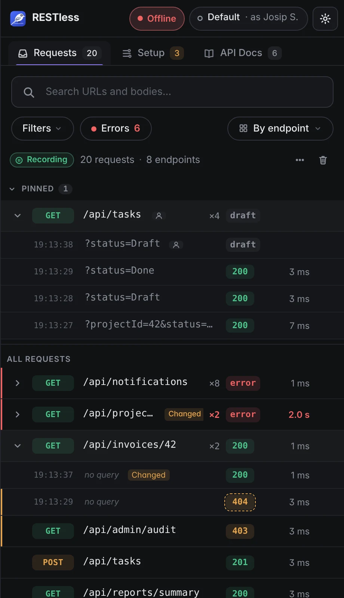
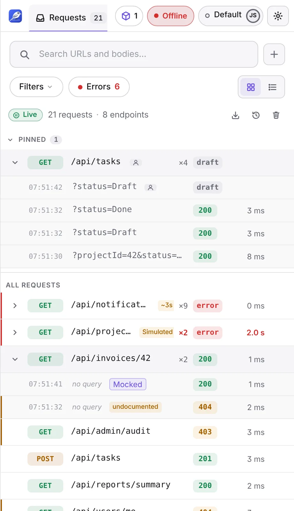
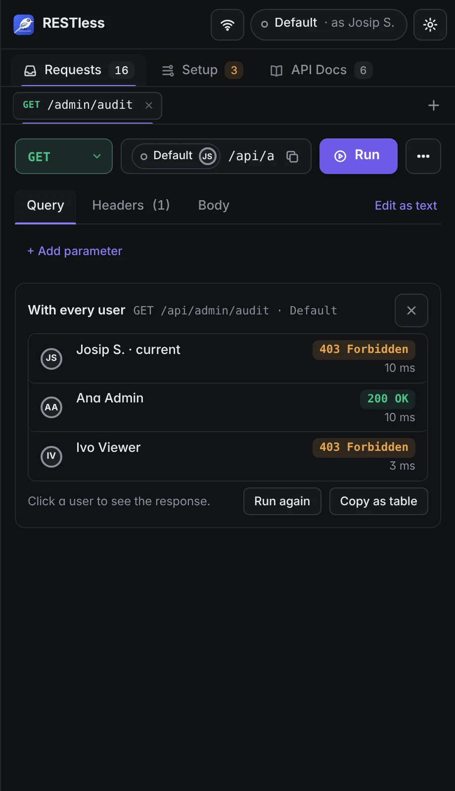
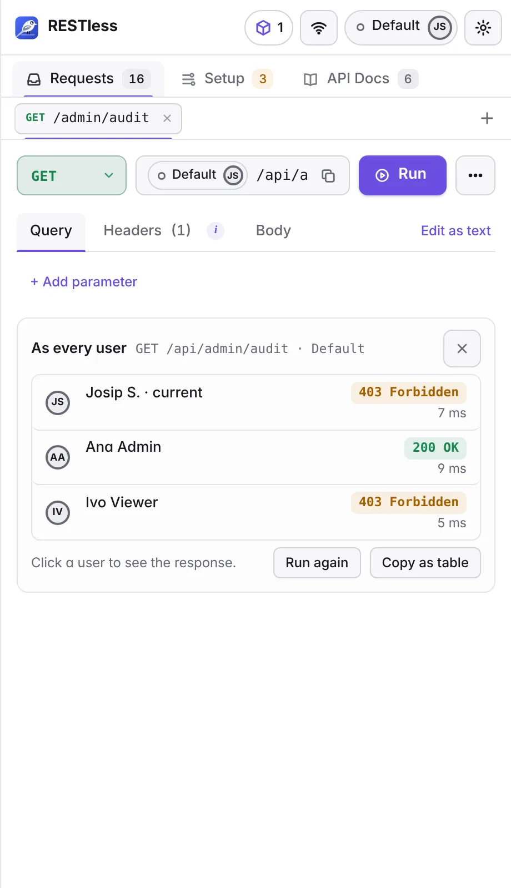
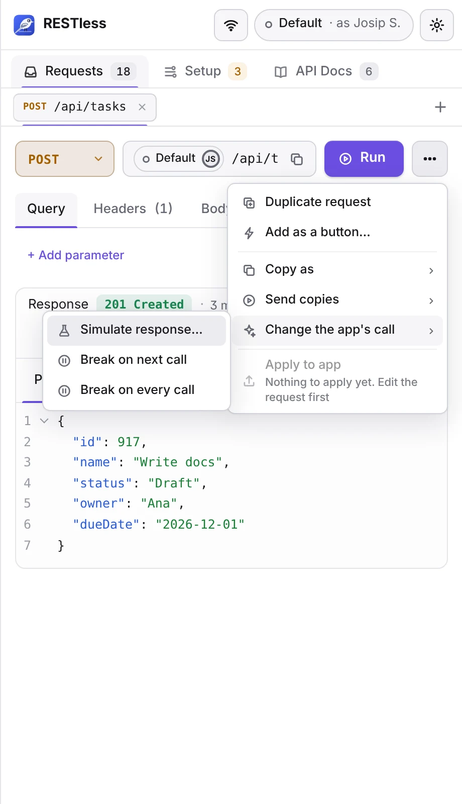

Testing tools
Quick checks for offline mode, permissions and validation.






Go offline
Click the wifi button in the header. Every call the app makes now fails, as if there’s no internet. Only this tab is affected, and it stays offline after a reload. Click Offline to go back online.
Run as every user
⋯ → Run & simulate → Run as every user sends the request as each user of the environment and lists the status for each. A quick permission check: Admin 200, Viewer 403.
Test edge cases
⋯ → Testing & debugging → Test edge cases sends the request again with one field changed at a time: empty, too long, wrong type, out of range, missing.
- ✓ rejected (4xx): what you want.
- ⚠ accepted (2xx): maybe missing validation.
- ✕ crashed (5xx): a bug.